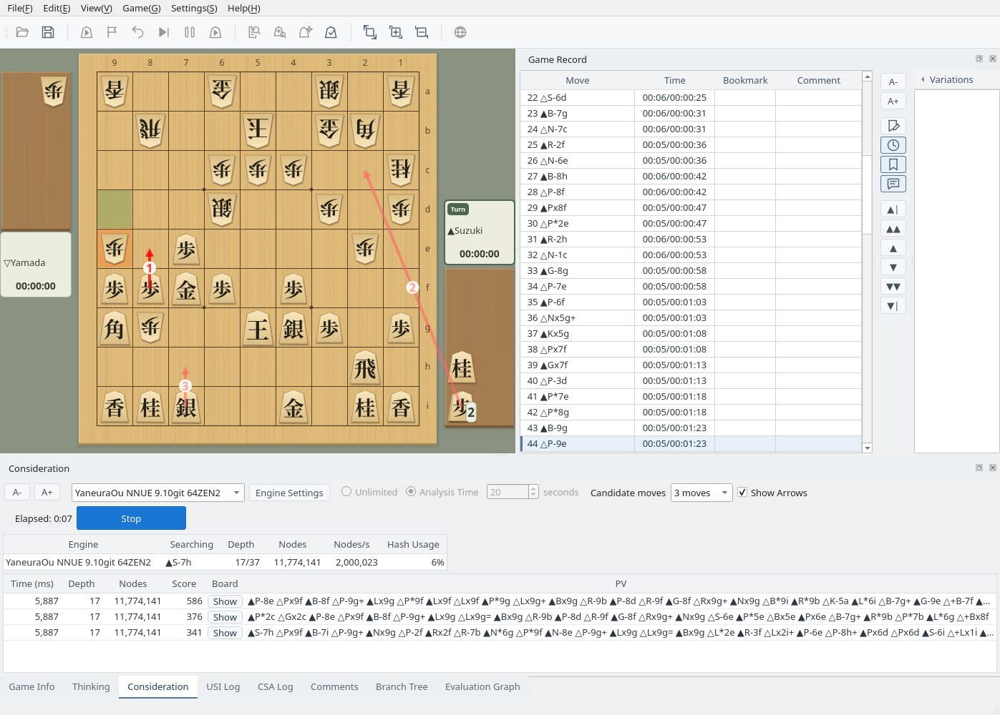
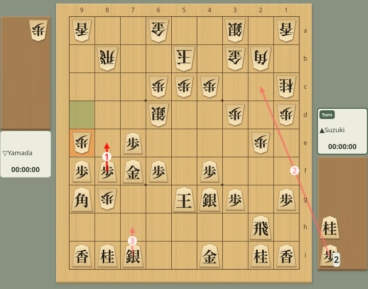
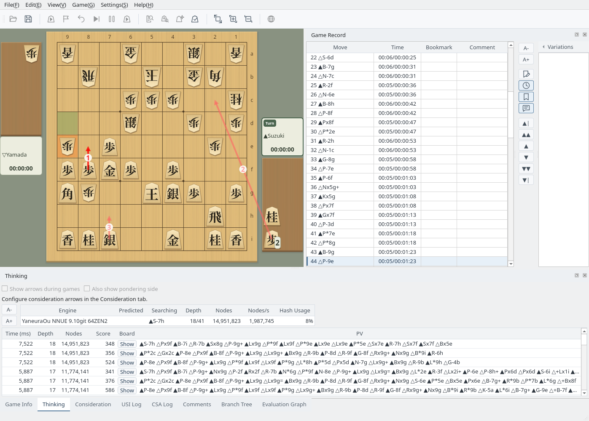
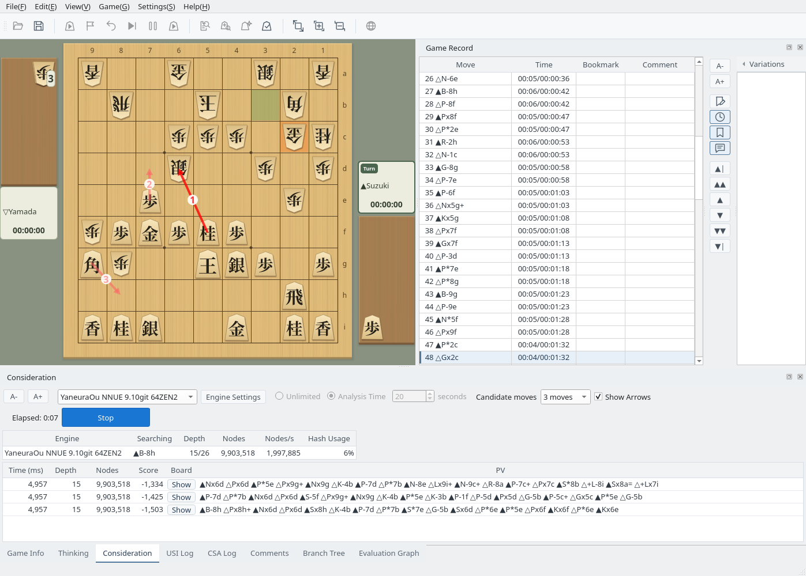

Analyze candidate moves from any position with an engine
Screenshots were captured on Linux with the English interface.
Set the analysis conditions in the Consideration tab
The Consideration tab has the following settings. They are saved and restored the next time you start ShogiBoardQ.
Select the position to analyze in the game record and click Start Consideration. ShogiBoardQ analyzes the position shown on the board. The time settings cannot be changed during consideration; click Stop first to change them.
Consideration tab: choose the engine, analysis time, number of candidate moves, and arrows
Follow the engine's candidate moves and principal variations in real time
Once consideration starts, the upper table shows the engine's search status (the move being searched, depth, nodes, nodes per second, and hash usage), and the lower table lists the candidate moves from the highest score down. Each row shows the score, depth, nodes, and principal variation (PV); click Show in the Board column to replay the PV on a board.
You can change the number of candidate moves or the engine during consideration, and the search starts over. When the analysis time runs out, the search stops and the results stay on screen. Select another position or change the number of candidate moves to resume. Click Stop to end consideration.

During consideration: candidate moves, scores, and principal variations update in real time
The board shows the candidate moves as arrows numbered by rank. The best move is drawn in dark red and the others in light red. A drop starts from the piece stand. Use the Show Arrows check box to show or hide the arrows; they disappear when you stop consideration.

Candidate move arrows: the number is the rank, and the arrow from the piece stand is a pawn drop
The Thinking tab lists the information received from the engine as a history, newest first, so you can see how the PV changed as the search deepened. Arrows during consideration are set in the Consideration tab, so the Thinking tab's Show arrows during games and Also show pondering side check boxes are disabled.

Thinking tab: the engine's search information, newest first
Select another position in the game record to keep analyzing
During consideration, click another move in the game record or move with the navigation buttons, and the analysis starts over from that position. The elapsed time also restarts from zero, so you can examine positions of interest one after another.

Continue: selecting another move in the game record restarts the analysis from that position